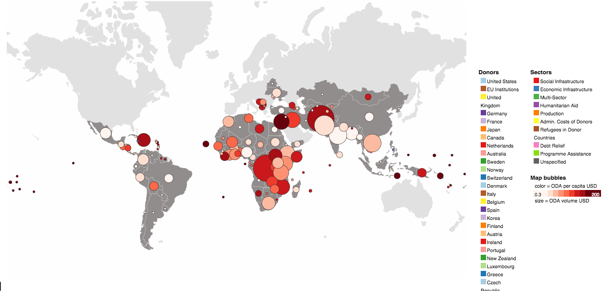
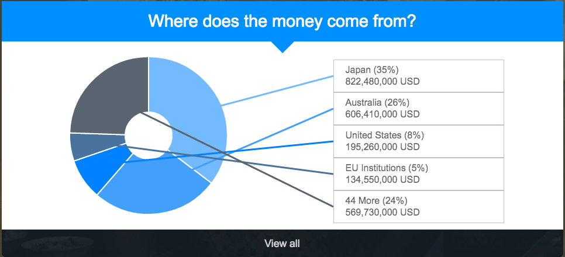
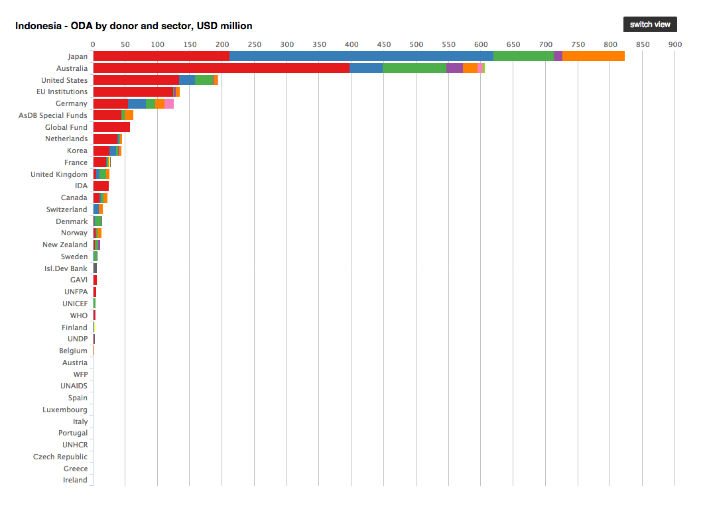
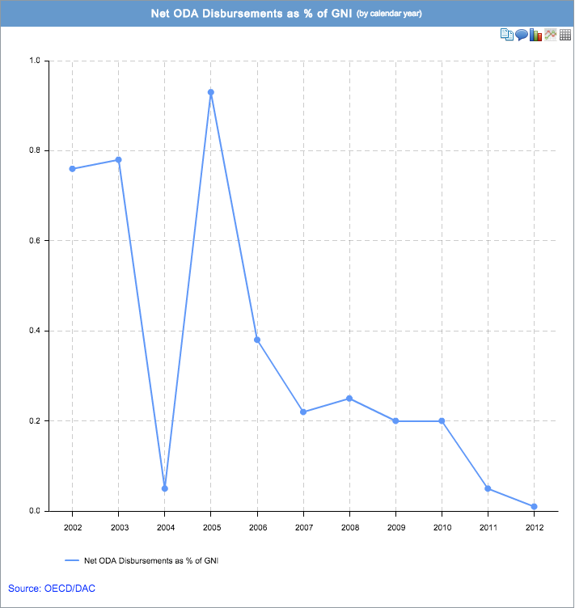

A short intro to Data Visualization
Zara Rahman / Open Development Toolkit
adapted from Michael Bauer
Why?
- Communication
- Exploration
- Better understanding
What are we showing?
Why are we showing it?
To whom are we showing it?
How can we visualise Official Development Assistance (ODA) to Indonesia?
Question 1: How much money does Indonesia receive, compared with other countries?

Visualisation source: OECD Compare your country tool
Question 2: Who gives aid to Indonesia?

Visualisation source: d-portal

Visualisation source: AidFlows

Visualisation source: OECD Compare your country tool
Question 3: How important is ODA for Indonesia?

Visualisation source: AidFlows
Question 4: How is ODA used in Indonesia?
View Where AusAID Works in Indonesia in a larger map
Colours
- Use One!
- Highlight what is important
- If you have more than one: The color has to be additional
information
- Avoid Red/Green contrasts
- Use Colorbrewer!
A word on Pie Charts

A word on Pie Charts
- Avoid
- Only if you show parts of a whole
- Only with less than 5 categories

Source dark
horse analytics
Examples of good (and less good) dataviz
Visualization Tools
Resources
- The Visual Display of Quantitative Information Edward R.
Tufte(Amazon)
- The Functional Art Alberto Cairo (Amazon)
- The Data Journalism Handbook J. Gray, L. Chambers, L.
Bonnegru (ed.) (Web) (Amazon)
- Visualising Information for Advocacy Tactical Tech
(Web)
- Scraping for Journalists Paul Bradshaw(Leanpub)